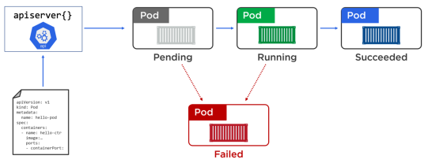

Pod
Pods are the fundamental unit of deployment in K8s.
For running one or more closely related containers. Containers can NOT live outside a pod in K8s world.
Containers in a Pod are started in parallel by default. As a result, there is no way to determine which container becomes available first inside a Pod. initContainers can be used to ensure some containers are ready before others in a pod.
Pod have a random ip... and recreating a pod gives a new ip ! that's why we are using services...
Containers inside a pod can communicate using ports on localhost.
A standalone pod is NOT recreated on failure.
IMPORTANT : if more than one container is linked to a pod, the containers MUST be strongly coupled. For instance, a database and its specific backup system.
A Pod is a logical collection of one or more containers, which:
- Are scheduled together on the same host with the Pod
- Share the same network namespace
- Have access to mount the same external storage (volumes)
Every pod runs a pause container, which handles networking. This container is hidden from Kubernetes commands, but will be displayed using docker ps.

Configuration File
apiVersion: v1
kind: Pod
metadata:
name: client-pod
labels:
component: web
spec:
volumes:
- name: data
persistentVolumeClaim:
claimName: my-pvc
containers:
- name: client
image: foo/bar
ports:
- containerPort: 3000
volumeMounts:
- mountPath: /data
name: data
containerPort → ports to be exposed by the pod. Of course, it requires some knowledge about the container...
kubectl commands
NOTE: use run, NOT create pod :-)
kubectl run my-nginx-pod --image=nginx --port=80
kubectl run my-nginx-pod --image=nginx --generator=run-pod/v1
kubectl run -it dnsutils --image gcr.io/kubernetes-e2e-test-images/dnsutils:1.3
Attachments
{kind=link}